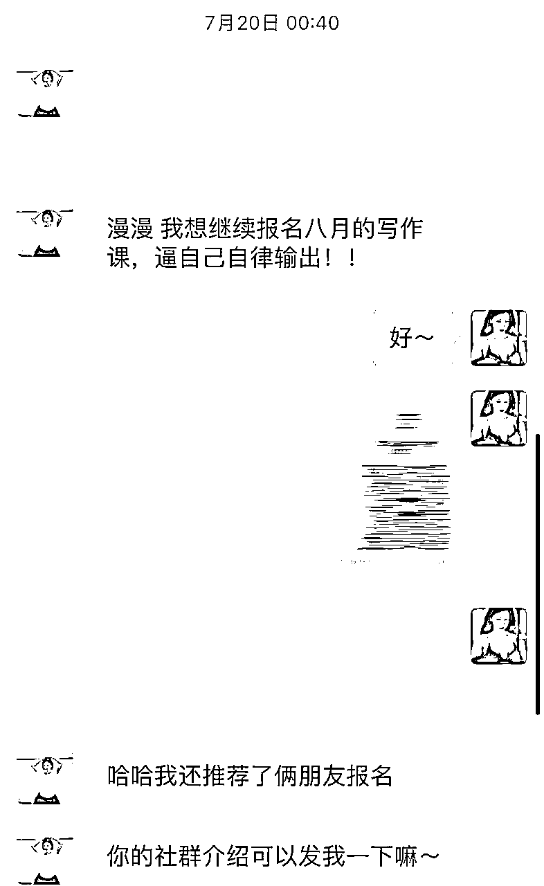
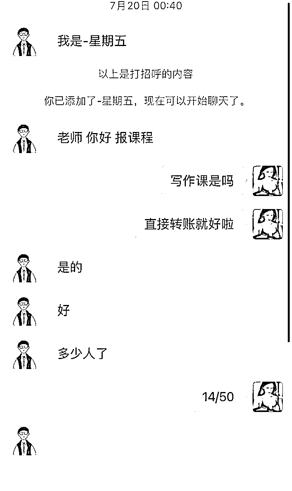
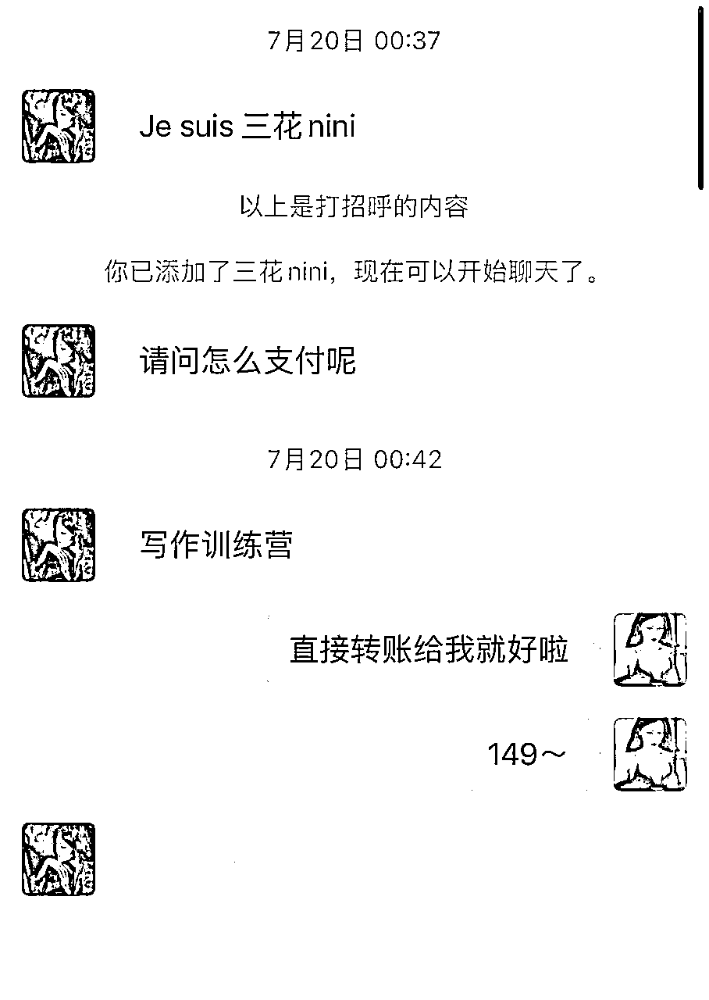
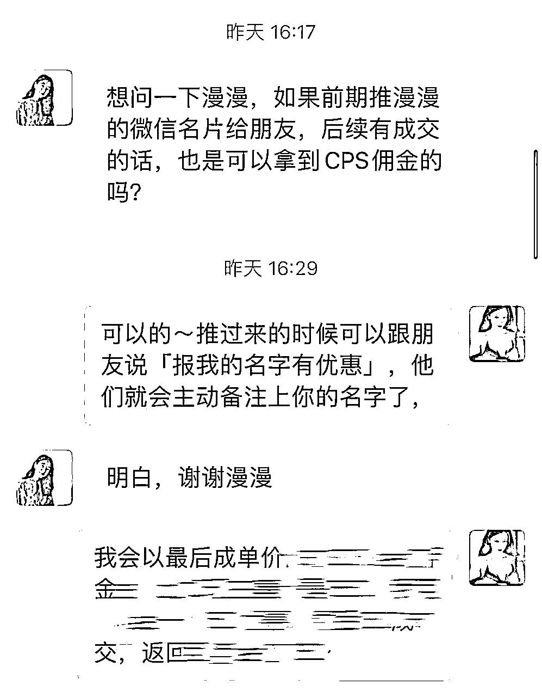
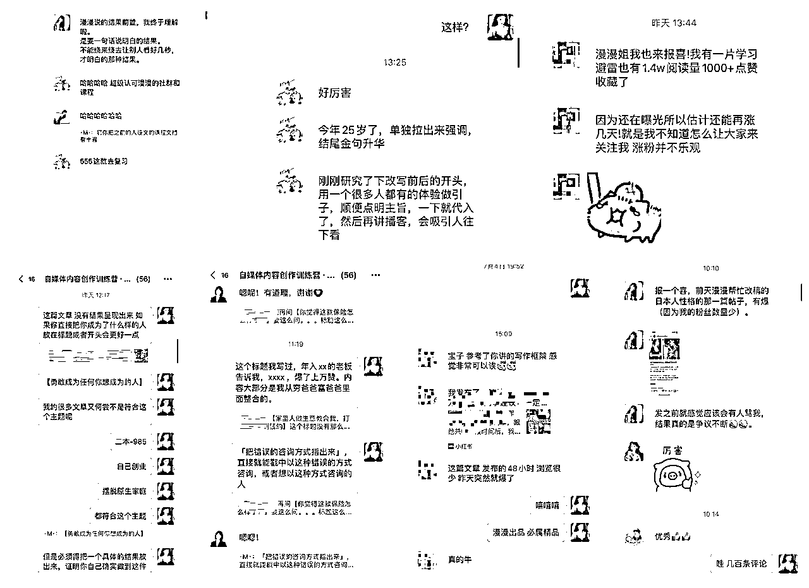
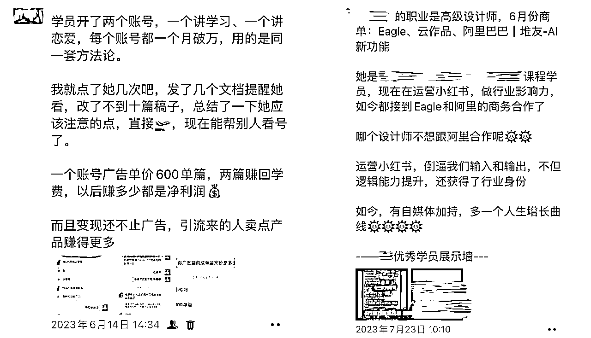

来源：https://xtwwuii5ub.feishu.cn/docx/G0FfddiSzo3WtkxeikfcBRvDnNf
hello 大家好，我是漫漫mansi，是一名小红书33万粉丝知识博主，一直都靠广告变现的我，直到今年年初才萌生对知识付费的好奇和意识，于是果断加入了数个知识付费社群学习他们的模式，到今年3月开始，我第一次做了自己的知识付费社群，正式做起来后3-6月大概收入15万，给大家分享一下我的经验。
首先介绍一下我自己
漫漫mansi，小红书同名，目前已有33万粉，知识博主。
📈我做小红书的阶段：
2020年12月-2021年3月，粉丝3000
2021年3月到2021年5月，粉丝5万。
2021年5月到2021年12月，21万。
（也就是经过了迷茫、摸索，最后只用了半年，我实现了20万粉丝。）
💰进入知识付费圈的阶段
2023年1月接触知识付费
2023年3月开始做小红书变现社群，直到6月变现15万左右。
目前- 想要扩大商业模式，热切希望生财的大佬一起深度合作。
想复杂的模式会越想陷得越深，不如立刻开始做一个你最擅长的或者最赚钱的赛道，纯粹点。
低客单价可以轻交付，减少第一次投入的成本，后续持续迭代优化出一个最优解做成高客单产品。
根据用户对产品和交付的反馈改进下一期的交付，根据他们付费的动作简化过程的手续。
不知道去年算不算知识付费风口， 但是去年赚钱情况肯定比今年好很多， 去年的资料号引流转化、自媒体（小红书）运营课程、写作课程算是铺天盖地，据我所知生财也是去年开始做小红书课程。
经济低迷情况下，人更想要变好、做副业赚钱，所以现在依然能入局各种知识付费项目，特别是「教人赚钱」的项目，目的是教人赚钱，所以求职课、自媒体课、电商课、各种其他教人赚钱的项目都可以做。
所以种一棵树最好是十年前其次是现在，不要再犹豫了。
以下是正文
想做什么产品和模式，就去什么社群学习
或者先进入大量社群观察什么模式赚钱，然后把人家的模式copy过来。
01 一些通用的励志话语可以直接成为自己的宣发文案，
比如我刚刚从朋友圈现摘的：
“人生就像一场马拉松，有时候你急于全力以赴可能会累倒在半路上，而有的时候适当的节奏和分散的策略才是赢得比赛的关键。”
“我最崇拜的人，大多时候是我自己。因为只有我才会帮助自己度过一个又一个的难关。常常有熬不住的时候，也想找个靠山靠一下，可是怎么找，都会发现，有的山长满荆棘，有的山长满野兽。所以，我才是自己最大的靠山，依赖别人会失去主动，让自己强起来才是一劳永逸的方法。”
02 提炼模板成为自己的
一张社群成员互动配图，配上其他人的文案。把文案里的案例变成自己。
当然，这些事情在你立刻动手开始做之后用户会给你反馈，你只需要及时纠正，就会越做越好。
我目前做的是小红书训练营，加入了包括生财在内的数个和自媒体、运营、内容创作相关社群大概10个，学习他们的模式，总的来说有都是如下几种：
我开始拉第一批用户，30/人的价格介绍自媒体的好处，
（1）低客单价的好处：
1.用户期待较低，交付不那么重。
2.低价带来的稳定收入：因为价格比较低，报名的人很多，一个半小时的直播就有50+人报名，收入就是1500+
3.用户期待低，交付做得好就会让用户产生好的印象，加强信任感，从而有利于下一步交付。
（2）这个主题也是刺激大家产生需求，直接介绍自媒体给我带来的好处，之后做课程就会容易转化。
即使自己懂得东西很多，也要先专注于一个内容，
比如我最擅长的就是写作，几乎篇篇爆款，所以我先做内容创作低客单，我做得也很好，所以第一期结束之后马上就有人报名下一期，或者直接转化到我的高客单价产品了，以及有很多报名的人都是推荐过来的，而且都是直接付费。



甚至我从来没和他们说过有推荐佣金机制！今天我才临时补充了推荐有佣金机制。

因为承诺过进群之后会改每一个稿子，限制名额目的是能把每份稿子都看到。
做好交付，说到做到，只招收50人就不多招人。每隔几天就统一答疑了一次，或群内文字或直播。
因为擅长，所以其实就算十篇文章我可能也不到二十分钟就改完了，
并且直播比文字改得效率更高，我经常随机直播，我轻松了，学员觉得听直播赚到了。
随便截几张我交付的图片和学员评价：

信任是根本
持续付费的产品可以是下一期的低客单付费产品，或者直接升级高客单产品
已付费成员给优惠券或者免费名额，要求是让他们写复盘：启发收获改进措施。
一方面，这部分复盘可以作为宣发内容，展示学员在社群的学习成果
一方面，学员会意识到收到了优惠
一方面，学员也能感受到重视，因为复盘是对她们的督促，是有利于之后进一步的。
低客单价的好处就是用户期待较低，一开始不需要很重的交付，也不用给自己压力，然后慢慢根据成员反馈迭代。
比如做好sop：收款、拉群、看群公告、有问题群内问不要私聊、提问方式要具体不要泛泛、不回复是因为没看到或者不懂不好回复总之不要反复催。等等一次性发给他们。
一方面，通过用户反馈进行迭代，交付就会比较轻松
另一方面，每次宣发时价格调整也会让用户感受到价值的提升
另一方面，也刺激他们产生早买早优惠的心理
其实我的用户基本上都是学生，大部分人是没有付费意识的，也没钱。
所以要时不时刺激他们的付费需求
拿案例来刺激需求，记住这个公式：
「xxx本身是什么情况，学了xxx课程，解决掉了xx问题，在xxx赛道上赚到了xx钱/拿到了xx（具体的成果）
一定要具体！要让人能对号入座
可以不这么硬，但是要凸显

真的拉人特别快，我只要发就会瞬间有人报名
另外，赚钱不要高姿态，为了赚钱姿态低点没关系，有意向的客户都抓住，对用户态度好=他们觉得你的服务好，就会有付费意愿。
以上，就是我前几个月做低客单价产品的一些心得。